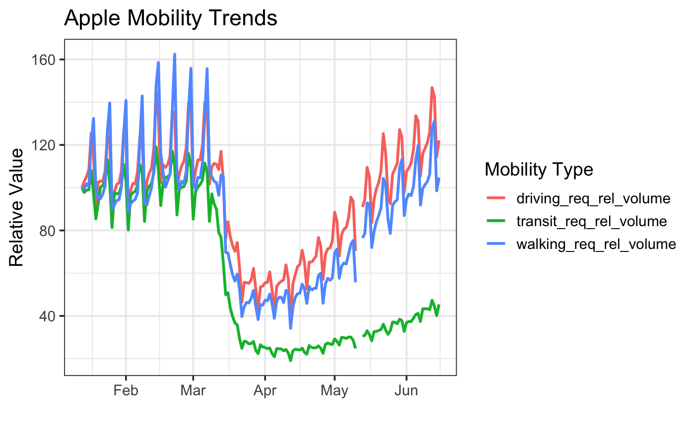

plot_us_mobility.RmdLet’s load the data, and filter down to the United States of America.
library(covid19mobility) library(dplyr) us_mobile <- refresh_covid19mobility_country() %>% filter(location_code == "USA")
Now, let’s plot it!
library(ggplot2) ggplot(us_mobile, aes(x = date, y = value, color = data_type)) + geom_line(size = 1.1) + theme_bw(base_size=12)
